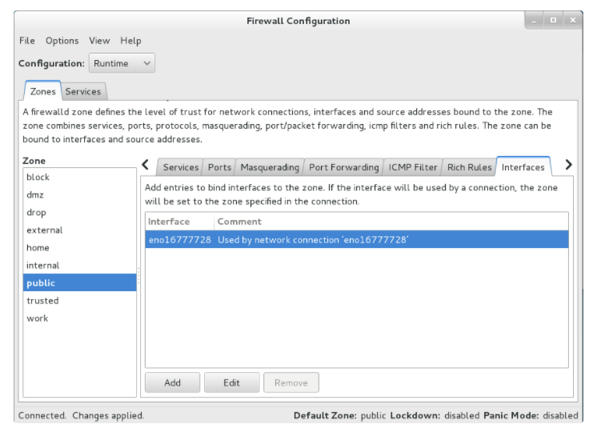

纸上得来终觉浅，绝知此事要躬行。
**iptables**是运行在用户空间的应用软件，通过控制 Linux 内核 netfilter 模块，来管理网络数据包的处理和转发。在大部分 Linux 发行版中，可以通过手册页或 man iptables 获取用户手册。通常 iptables 需要内核模块支持才能运行，此处相应的内核模块通常是 Xtables。因此，iptables 操作需要超级用户权限，其可执行文件通常位于 /sbin/iptables 或 /usr/sbin/iptables。同时，需要说明的是，以上命令通常只用于处理 IPv4 数据包；而对于 IPv6 数据包，则使用类似的 ip6tables 命令。
目前，iptables 支持内核 2.4 以上版本，旧版内核环境下则使用 ipchains（于 2.2 版内核）或 ipwadm（于 2.0 版内核）完成类似的功能。2014 年 1 月 19 日起发行的 Linux 内核 3.13 版则使用 nftables 取而代之，但仍然提供 iptables 命令做为兼容接口。
1. 防火墙管理工具
没有真正安全的防火墙，也没有绝对安全的技术！
保障数据的安全性是继保障数据的可用性之后最为重要的一项工作。防火墙作为公网与内网之间的保护屏障，在保障数据的安全性方面起着至关重要的作用。
众所周知，相较于企业内网，外部的公网环境更加恶劣，罪恶丛生。在公网与企业内网之间充当保护屏障的防火墙，虽然有软件或硬件之分，但主要功能都是依据策略对穿越防火墙自身的流量进行过滤。防火墙策略可以基于流量的源目地址、端口号、协议、应用等信息来定制，然后防火墙使用预先定制的策略规则监控出入的流量，若流量与某一条策略规则相匹配，则执行相应的处理，反之则丢弃。这样一来，就可以保证仅有合法的流量在企业内网和外部公网之间流动了。
IDS (入侵检测系统) --> FireWall ==> IPS (入侵防御系统)
|__ HIDS (主机入侵检测系统)
|__ NIDS (网络入侵检测系统)
|__ HoneyPot (蜜罐系统)
1.1 防火墙的分类
防火墙分类(逻辑上)
- 主机防火墙：针对于单个主机进行防护
- 网络防火墙：往往处于网络入口或边缘，针对于网络入口进行防护，服务于防火墙背后的本地局域网
- 网络防火墙和主机防火墙并不冲突，可以理解为，网络防火墙主外， 主机防火墙主内
防火墙分类(物理上)
- 硬件防火墙：在硬件和软件级别分别实现部分防火墙功能，性能高，成本高
- 软件防火墙：应用软件处理逻辑运行于通用硬件平台之上的防火墙，性能低，成本低
防火墙分类(层次上)
- 网络层防火墙：工作在 OSI 下面第三层
- 应用层防火墙：代理服务型防火墙，工作在 OSI 七层
1.2 防火墙的区别
在RHEL 7系统中，firewalld防火墙取代了iptables防火墙，但是还是可以使用iptables防火墙管理工具的。对于接触Linux系统比较早或学习过RHEL 6系统的人来说，当他们发现曾经掌握的知识在RHEL 7中不再适用，需要全新学习firewalld时，难免会有抵触心理。
其实，iptables与firewalld都不是真正的防火墙，它们都只是用来定义防火墙策略的防火墙管理工具而已，或者说，它们只是一种服务。iptables服务会把配置好的防火墙策略交由内核层面的netfilter网络过滤器来处理，而firewalld服务则是把配置好的防火墙策略交由内核层面的nftables包过滤框架来处理。换句话说，当前在Linux系统中其实存在多个防火墙管理工具，旨在方便运维人员管理Linux系统中的防火墙策略，我们只需要配置妥当其中的一个就足够了。虽然这些工具各有优劣，但它们在防火墙策略的配置思路上是保持一致的。大家甚至可以不用完全掌握本章介绍的内容，只要在这多个防火墙管理工具中任选一款并将其学透，就足以满足日常的工作需求了。
2. iptables 工具
在早期的
Linux系统中，默认使用的是iptables防火墙管理服务来配置防火墙。尽管新型的firewalld防火墙管理服务已经被投入使用多年，但是大量的企业在生产环境中依然出于各种原因而继续使用iptables。那么在此处，我们就来聊聊Linux的iptables防火墙管理工具。
- netfilter：网络过滤器框架，提供了钩子函数
- iptables：规则管理工具，负责给钩子函数添加功能
2.1 工具简述
iptables其实不是真正的防火墙，可以把它理解成一个客户端代理。用户通过iptables这个代理，将用户的安全设定执行到对应的安全框架中，这个安全框架才是真正的防火墙，这个框架的名字叫netfilter。
iptables的工作方式- **
netfilter**：才是防火墙真正的安全框架，工作于内核空间 - **
iptables**：其实是一个命令行工具，工作于用户空间，用来操作安全框架的工具
- **
netfilter/iptables组成Linux平台下的包过滤防火墙，与大多数的Linux软件一样，这个包过滤防火墙是免费的，它可以代替昂贵的商业防火墙解决方案，完成封包过滤、封包重定向和网络地址转换等功能。
iptables具有如下功能- 数据包内容修改
- 网络地址转换(
NAT) - 端口地址转换(
PAT) - 数据包过滤的防火墙功能
# CentOS6中使用service启动、停止、重启
[root@localhost ~]# service iptables start
[root@localhost ~]# service iptables stop
[root@localhost ~]# service iptables restart
2.2 工作方式
当客户端访问服务器的Web服务时，客户端发送报文到服务器的网卡。由于数据包到达服务器后自下而上传递，必会经过位于内核层TCP/IP协议栈，所以客户端的信息会通过内核的TCP协议传输到用户空间中的Web服务中。当Web服务需要响应客户端请求时，Web服务发出的响应报文的目标终点则为客户端，这个时候，Web服务所监听的Web与端口反而变成了原点。所以，如果我们想要防火墙能够达到防火的目的，则需要在内核中设置关卡，所有进出的报文都要通过这些关卡，经过检查后，符合放行条件的才能放行，符合阻拦条件的则需要被阻止，于是，就出现了input关卡和output关卡，而这些关卡在iptables中不被称为关卡而被称为链。
其实我们上面描述的场景并不完善，因为客户端发来的报文访问的目标地址可能并不是本机，而是其他服务器，当本机的内核支持IP_FORWARD时，我们就可以将报文转发给其他服务器。
我们能够想象出某些常用场景中，报文的流向。
- 流入：
PREROUTING --> INPUT - 流出：
OUTPUT --> POSTROUTING - 转发：
PREROUTING --> FORWARD --> POSTROUTING
2.3 链的概念
我们知道，防火墙的作用就在于对经过的报文匹配规则，然后执行对应的动作。所以，当报文经过这些链的时候，则必须匹配这个关卡上的规则，但是，这个链上可能不止有一条规则，而是有很多条规则。当每个经过这个链的报文，都要将这条链上的所有规则匹配一遍，如果有符合条件的规则，则执行规则对应的动作。
我们能够想象链的的作用范围。
PREROUTING：在进行路由选择前处理数据包INPUT：处理流入的数据包OUTPUT：处理流出的数据包FORWARD：处理转发的数据包POSTROUTING：在进行路由选择后处理数据包
2.4 表的概念
我们把具有相同功能的规则的集合叫做表，所以说不同功能的规则可以放置在不同的表中进行管理，而iptables已经为我们定义了4种表。每种表对应了不同的功能，而我们定义的规则也都逃脱不了这4种功能的范围，所以必须先搞明白每种表的作用。
filter表- 负责防火墙过滤功能
- 内核模块为
iptables_filter
nat表- 负责网络地址转换功能
- 内核模块为
iptable_nat
mangle表- 负责拆解报文，做出修改，并重新封装的功能
- 内核模块为
iptable_mangle
raw表- 负责关闭
nat表上启用的连接追踪机制 - 在承载大量并发的服务器上，不建议使用连接追踪机制，因为很费内存资源
- 内核模块为
iptable_raw
- 负责关闭
2.5 表链关系
传说中的四表五链，即将隆重登场!
功能的优先级次序
raw --> mangle --> nat --> filter
表中的规则可以被哪些链使用（从表到链的对应关系）
CentOS6系统raw表：PREROUTING、OUTPUTmangle表：PREROUTING、INPUT、FORWARD、OUTPUT、POSTROUTINGnat表：PREROUTING、OUTPUT、POSTROUTINGfilter表：INPUT、FORWARD、OUTPUT
CentOS7系统raw表：PREROUTING、OUTPUTmangle表：PREROUTING、INPUT、FORWARD、OUTPUT、POSTROUTINGnat表：PREROUTING、INPUT、OUTPUT、POSTROUTINGfilter表：INPUT、FORWARD、OUTPUT
CentOS7系统中nat表还有INPUT链
四表五链的注意事项（重要）
规则：添加规则时的考量点
- (1) 要实现哪种功能：判断添加在哪张表上
- (2) 报文流经的路径：判断添加在哪个链上
链：链上规则的次序，即为检查的次序，因此隐含一定的法则
- (1) 同类规则(访问同一应用)，匹配范围小的放上面
- (2) 不同类规则(访问不同应用)，匹配到报文频率较大的放上面
- (3) 将那些可由一条规则描述的多个规则合并为一个
- (4) 设置默认策略
2.6 规则概念
规则：根据指定的匹配条件来尝试匹配每个流经此处的报文，一旦匹配成功，则由规则后面指定的处理动作进行处理
匹配条件
基本匹配条件
- 源地址 IP
- 目标地址 IP
- 传输协议
- 服务类型
扩展匹配条件
- 扩展匹配条件也是
netfilter中的一部分，只是以模块的形式存在，需要依赖对应的扩展模块。 - 如：源端口和目标端口
- 扩展匹配条件也是
处理动作
- 处理动作在
iptables中被称为target，动作也可以分为基本动作和扩展动作。
| 常用的动作 | 动作含义解释 |
|---|---|
ACCEPT |
允许数据包通过 |
DROP |
直接丢弃数据包，不给任何回应信息，客户端会感觉请求泥牛入海，直到过了超时时间才会有反应 |
REJECT |
拒绝数据包通过，必要时会给数据发送端一个响应的信息，客户端刚请求就会收到拒绝的信息 |
SNAT |
源地址转换，解决内网用户用同一个公网地址上网的问题 |
DNAT |
目标地址转换，请求响应时需要 |
MASQUERADE |
是 SNAT 的一种特殊形式，适用于动态的、临时会变的 IP 上 |
REDIRECT |
在本机做端口映射 |
LOG |
在/var/log/messages 文件中记录日志信息，然后将数据包传递给下一条规则，也就是说除了记录以外不对数据包做任何其他操作，仍然让下一条规则去匹配 |
2.7 命令使用

3. firewalld 工具
RHEL 7系统中集成了多款防火墙管理工具，其中**firewalld（Dynamic Firewall Manager of Linux systems，Linux系统的动态防火墙管理器）服务是默认的防火墙配置管理工具**，它拥有基于CLI（命令行界面）和基于GUI（图形用户界面）的两种管理方式。
# CentOS默认使用的防火墙应该是firewall，而不是iptables
# 如果需要使用的是iptables防火墙需要先关闭firewall，安装iptables
# 查看firewall的安装和启动状态
[root@localhost ~]# yum list installed firewalld iptables
[root@localhost ~]# systemctl list-unit-files firewalld.service iptables.service
# 关闭firewall并禁止开机启动
[root@localhost ~]# systemctl stop firewalld.service
[root@localhost ~]# systemctl disable firewalld.service
# 安装iptables防火墙并设置开启启动
[root@localhost ~]# yum install iptables-services
[root@localhost ~]# systemctl enable iptables.service
# 重启iptables工具
[root@localhost ~]# systemctl restart iptables.service
3.1 区域概念
相较于传统的防火墙管理配置工具，firewalld支持动态更新技术并加入了区域（zone）概念。简单来说，区域就是firewalld预先准备了几套防火墙策略集合（策略模板），用户可以根据生产场景的不同而选择合适的策略集合，从而实现防火墙策略之间的快速切换。
例如，我们有一台笔记本电脑，每天都要在办公室、咖啡厅和家里使用。按常理来讲，这三者的安全性按照由高到低的顺序来排列，应该是家庭、公司办公室、咖啡厅。当前，我们希望为这台笔记本电脑指定如下防火墙策略规则：在家中允许访问所有服务；在办公室内仅允许访问文件共享服务；在咖啡厅仅允许上网浏览。在以往，我们需要频繁地手动设置防火墙策略规则，而现在只需要预设好区域集合，然后只需轻点鼠标就可以自动切换了，从而极大地提升了防火墙策略的应用效率。
firewalld中常用的区域名称及测了规则
| 区域 | 默认规则策略 |
|---|---|
trusted |
允许所有的数据包 |
home |
拒绝流入的流量，除非与流出的流量相关；而如果流量与 ssh、mdns、ipp-client、amba-client 与 dhcpv6-client 服务相关，则允许流量 |
internal |
等同于 home 区域 |
work |
拒绝流入的流量，除非与流出的流量数相关；而如果流量与 ssh、ipp-client 与 dhcpv6-client 服务相关，则允许流量 |
public |
拒绝流入的流量，除非与流出的流量相关；而如果流量与 ssh、dhcpv6-client 服务相关，则允许流量 |
external |
拒绝流入的流量，除非与流出的流量相关；而如果流量与 ssh 服务相关，则允许流量 |
dmz |
拒绝流入的流量，除非与流出的流量相关；而如果流量与 ssh 服务相关，则允许流量 |
block |
拒绝流入的流量，除非与流出的流量相关 |
drop |
拒绝流入的流量，除非与流出的流量相关 |
3.2 终端管理工具
**
firewalld-cmd**是firewalld防火墙配置管理工具的命令行界面(CLI)版本
- 参数一般都是以“长格式”来提供
RHEL 7系统支持命令的参数补齐，用Tab键来补齐
firewalld-cmd命令中使用的参数以及作用
| 参数 | 作用 |
|---|---|
--get-default-zone |
查询默认的区域名称 |
--set-default-zone=<区域名称> |
设置默认的区域，使其永久生效 |
--get-zones |
显示可用的区域 |
--get-services |
显示预先定义的服务 |
--get-active-zones |
显示当前正在使用的区域与网卡名称 |
--remove-source= |
将源自此 IP 或子网的流量导向指定的区域 |
--remove-source= |
不再将源自此 IP 或子网的流量导向某个指定区域 |
--add-interface=<网卡名称> |
将源自该网卡的所有流量都导向某个指定区域 |
--change-interface=<网卡名称> |
将某个网卡与区域进行关联 |
--list-all |
显示当前区域的网卡配置参数、资源、端口以及服务等信息 |
--list-all-zones |
显示所有区域的网卡配置参数、资源、端口以及服务等信息 |
--add-service=<服务名> |
设置默认区域允许该服务的流量 |
--add-port=<端口号/协议> |
设置默认区域允许该端口的流量 |
--remove-service=<服务名> |
设置默认区域不再允许该服务的流量 |
--remove-port=<端口号/协议> |
设置默认区域不再允许该端口的流量 |
--reload |
让“永久生效”的配置规则立即生效，并覆盖当前的配置规则 |
--panic-on |
开启应急状况模式 |
--panic-off |
关闭应急状况模式 |
与Linux系统中其他的防火墙策略配置工具一样，使用firewalld配置的防火墙策略默认为运行时模式（Runtime），又称为当前生效模式，而且随着系统的重启会失效。如果想让配置策略一直存在，就需要使用永久模式（Permanent）了，方法就是在用firewall-cmd命令正常设置防火墙策略时添加--permanent参数，这样配置的防火墙策略就可以永久生效了。
但是，永久生效模式有一个“不近人情”的特点，就是使用它设置的策略只有在系统重启之后才能自动生效。如果想让配置的策略立即生效，需要手动执行firewall-cmd --reload命令。
3.3 实战演示
格式：
firewall-cmd [--permanent] --zone=<区域> cmd子命令
- 查看
firewalld服务当前所使用的区域
[root@localhost ~]# firewall-cmd --get-default-zone
public
- 查询
eno16777728网卡在firewalld服务中的区域
[root@localhost ~]# firewall-cmd --get-zone-of-interface=eno16777728
public
- 把
firewalld服务中eno16777728网卡的默认区域修改为external，并在系统重启后生效
# 修改默认区域
[root@localhost ~]# firewall-cmd --permanent --zone=external --change-interface=eno16777728
success
# 查看当前模式下的区域名称
[root@localhost ~]# firewall-cmd --get-zone-of-interface=eno16777728
public
# 查看永久模式下的区域名称
[root@localhost ~]# firewall-cmd --permanent --get-zone-of-interface=eno16777728
external
- 把
firewalld服务的当前默认区域设置为public
[root@localhost ~]# firewall-cmd --set-default-zone=public
success
[root@localhost ~]# firewall-cmd --get-default-zone
public
- 启动/关闭
firewalld防火墙服务的应急状况模式，阻断一切网络连接（当远程控制服务器时请慎用）
[root@localhost ~]# firewall-cmd --panic-on
success
[root@localhost ~]# firewall-cmd --panic-off
success
- 查询
public区域是否允许请求SSH和HTTPS协议的流量
[root@localhost ~]# firewall-cmd --zone=public --query-service=ssh
yes
[root@localhost ~]# firewall-cmd --zone=public --query-service=https
no
- 把
firewalld服务中请求HTTPS协议的流量设置为永久允许，并立即生效
[root@localhost ~]# firewall-cmd --zone=public --add-service=https
success
[root@localhost ~]# firewall-cmd --permanent --zone=public --add-service=https
success
[root@localhost ~]# firewall-cmd --reload
success
- 把
firewalld服务中请求HTTP协议的流量设置为永久拒绝，并立即生效
[root@localhost ~]# firewall-cmd --permanent --zone=public --remove-service=http
success
[root@localhost ~]# firewall-cmd --reload
success
- 把在
firewalld服务中访问8080和8081端口的流量策略设置为允许，但仅限当前生效
[root@localhost ~]# firewall-cmd --zone=public --add-port=8080-8081/tcp
success
[root@localhost ~]# firewall-cmd --zone=public --list-ports
8080-8081/tcp
- 把原本访问本机
888端口的流量转发到22端口，要且求当前和长期均有效
# 流量转发命令格式
firewall-cmd --permanent --zone=<区域> --add-forward-port=port=<源端口号>:proto=<协议>:toport=<目标端口号>:toaddr=<目标IP地址>
[root@localhost ~]# firewall-cmd --permanent --zone=public --add-forward-port=port=888:proto=tcp:toport=22:toaddr=192.168.10.10
success
[root@localhost ~]# firewall-cmd --reload
success
# 在客户端使用ssh命令尝试访问192.168.10.10主机的888端口
[root@client A ~]# ssh -p 888 192.168.10.10
The authenticity of host '[192.168.10.10]:888 ([192.168.10.10]:888)' can't be established.
ECDSA key fingerprint is b8:25:88:89:5c:05:b6:dd:ef:76:63:ff:1a:54:02:1a.
Are you sure you want to continue connecting (yes/no)? yes
Warning: Permanently added '[192.168.10.10]:888' (ECDSA) to the list of known hosts.
root@192.168.10.10's password:此处输入远程root管理员的密码
Last login: Sun Jul 19 21:43:48 2017 from 192.168.10.10
- 在
firewalld服务中配置一条富规则，使其拒绝192.168.10.0/24网段的所有用户访问本机的ssh服务的22端口
# firewalld中的富规则表示更细致、更详细的防火墙策略配置
# 它可以针对系统服务、端口号、源地址和目标地址等诸多信息进行更有正对性的策略配置
# 它的优先级在所有的防火墙策略中也是最高的
[root@localhost ~]# firewall-cmd --permanent --zone=public --add-rich-rule="rule family="ipv4" source address="192.168.10.0/24" service name="ssh" reject"
success
[root@localhost ~]# firewall-cmd --reload
success
# 在客户端使用ssh命令尝试访问192.168.10.10主机的ssh服务的22端口
[root@client A ~]# ssh 192.168.10.10
Connecting to 192.168.10.10:22...
Could not connect to '192.168.10.10' (port 22): Connection failed.
3.4 图形管理工具
在各种版本的
Linux系统中，firewall-config的图形化工具做的非常棒，推荐使用。
- 它是
firewalld防火墙配置管理工具的图形用户界面（GUI）版本，几乎可以实现所有以命令行来执行的操作- 毫不夸张的说，即使读者没有扎实的
Linux命令基础，也完全可以通过它来妥善配置RHEL 7中的防火墙策略
图形界面具体功能
- 1：选择运行时(
Runtime)模式或永久(Permanent)模式的配置 - 2：可选的策略集合区域列表
- 3：常用的系统服务列表
- 4：当前正在使用的区域
- 5：管理当前被选中区域中的服务
- 6：管理当前被选中区域中的端口
- 7：开启或关闭源地址转换协议(
SNAT)技术 - 8：设置端口转发策略
- 9：控制请求
icmp服务的流量 - 10：管理防火墙的富规则
- 11：管理网卡设备
- 12：被选中区域的服务，若勾选了相应服务前面的复选框，则表示允许与之相关的流量
- 13：
firewall-config工具的运行状态
3.5 实战演示
在使用
firewall-config工具配置完防火墙策略之后，无须进行二次确认，因为只要有修改内容，它就自动进行保存。
简单实例
- 我们先将当前区域中请求
http服务的流量设置为允许，但仅限当前生效
- 尝试添加一条防火墙策略规则，使其放行访问
TCP协议8080～8088端口的流量-- 将其设置为永久生效，以达到系统重启后防火墙策略依然生效的目的-
- 如下图界面配置完毕后，还需在 Options 菜单中单击 Reload Firewalld 命令，让配置的防火墙策略立即生效
复杂实例
讲解firewall-config工具的功能时，曾经提到了源网络地址转换(SNAT)技术。SNAT是一种为了解决IP地址匮乏而设计的技术，它可以使得多个内网中的用户通过同一个外网IP接入Internet。该技术的应用非常广泛，甚至可以说我们每天都在使用，只不过没有察觉到罢了。
- 网络中不使用
SNAT技术
- 网络中使用
SNAT技术
使用iptables命令实现SNAT技术是一件很麻烦的事情，但是在firewall-config中却是小菜一碟了。用户只需按照图进行配置，并选中Masquerade zone复选框，就自动开启了SNAT技术。

为了让大家直观查看不同工具在实现相同功能的区别，这里使用 firewall-config 工具重新演示了前面使用 firewalld-cmd 来配置防火墙策略规则，将本机 888 端口的流量转发到 22 端口，且要求当前和长期均有效。
如果生产环境中的服务器有多块网卡在同时提供服务（这种情况很常见），则对内网和对外网提供服务的网卡要选择的防火墙策略区域也是不一样的。也就是说，可以把网卡与防火墙策略区域进行绑定，这样就可以使用不同的防火墙区域策略，对源自不同网卡的流量进行针对性的监控，效果会更好。

3.6 常用命令总结
OpenSource: 总结的快捷键使用文档！
4. 书写规则经验总结
1、规则的顺序非常重要
- 如果报文已经被前面的规则匹配到，iptables 则会对报文执行对应的动作，通常是 ACCEPT 或者 REJECT，报文被放行或拒绝以后，即使后面的规则也能匹配到刚才放行或拒绝的报文，也没有机会再对报文执行相应的动作了（前面规则的动作为 LOG 时除外），所以，针对相同服务的规则，更严格的规则应该放在前面。
2、当规则中有多个匹配条件时，条件之间默认存在”与”的关系
- 如果一条规则中包含了多个匹配条件，那么报文必须同时满足这个规则中的所有匹配条件，报文才能被这条规则匹配到。
3、在不考虑 1 的情况下，应该将更容易被匹配到的规则放置在前面
- 比如，你写了两条规则，一条针对 sshd 服务，一条针对 web 服务。
- 假设，一天之内，有 20000 个请求访问 web 服务，有 200 个请求访问 sshd 服务，
- 那么，应该将针对 web 服务的规则放在前面，针对 sshd 的规则放在后面，因为访问 web 服务的请求频率更高。
- 如果将 sshd 的规则放在前面，当报文是访问 web 服务时，sshd 的规则也要白白的验证一遍，由于访问 web 服务的频率更高，白白耗费的资源就更多。
- 如果 web 服务的规则放在前面，由于访问 web 服务的频率更高，所以无用功会比较少。
- 换句话说就是，在没有顺序要求的情况下，不同类别的规则，被匹配次数多的、匹配频率高的规则应该放在前面。
4、当 iptables 作为网络防火墙
- 当 iptables 所在主机作为网络防火墙时，在配置规则时，应着重考虑方向性，双向都要考虑，从外到内，从内到外。
5、配置 iptables 白名单
- 在配置 iptables 白名单时，往往会将链的默认策略设置为 ACCEPT，通过在链的最后设置 REJECT 规则实现白名单机制，而不是将链的默认策略设置为 DROP，如果将链的默认策略设置诶 DROP，当链中的规则被清空时，管理员的请求也将会被 DROP 掉。